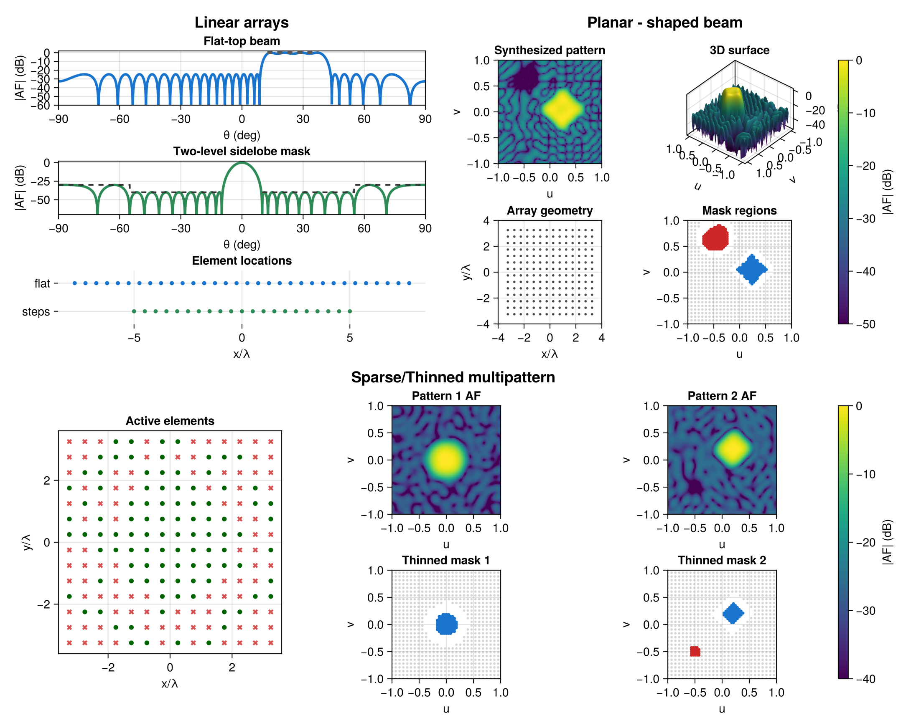

ArraySynthesis.jl
A Julia package for antenna array factor synthesis via convex optimization. Supports LP, QP, and SOCP formulations with multiple solvers through JuMP.

Installation
pkg> add https://github.com/uvegege/ArraySynthesis.jlQuick start
using ArraySynthesis
using ArraySynthesis: °, dB
using HiGHS
beam_region = region(12.5°..37.5°, 1°)
sll_region1 = region(-90°..6.5°, 1°)
sll_region2 = region(43.5°..90°, 1°)
p = pattern(shaped_beam(beam_region, 1.0, ripple = -0.6dB))
obj = MinSLL(join_regions(sll_region1, sll_region2))
array = symmetric_linear_array(32, d = 0.5)
result = synthesize(array, p, obj, ConjugateSymmetricWeights(), LP(), HiGHS.Optimizer)Documentation Map
Start with User Guide for the five pieces of a synthesis problem: array, pattern, objective, excitation, and formulation.
See Pattern and Regions for the pattern specification.
The Objectives, Excitations, and Formulations pages describe the main modeling choices.
References
- H. Lebret and S. Boyd, "Antenna array pattern synthesis via convex optimization," IEEE Trans. Signal Process., vol. 45, no. 3, pp. 526–532, Mar. 1997.
- B. Fuchs, "Shaped beam synthesis of arbitrary arrays via linear programming," IEEE Antennas Wireless Propag. Lett., vol. 9, pp. 481–484, 2010.